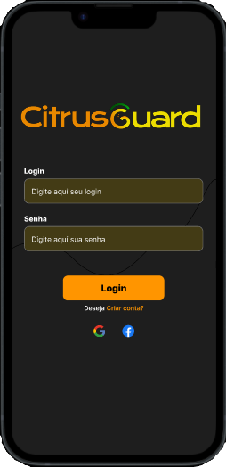

Tivemos a ideia de um produto que identifica a gomose em citros através da inteligência artificial! O cliente tira uma imagem da folha ou do fruto que ele acha que possa estar contaminado e, em seguida, a IA analisa a probabilidade de infecção pelo fungo. O aplicativo também possui uma aba com os cuidados necessários caso a planta esteja realmente infectada.


O CitrusGuard é um sistema que utiliza a inteligência artificial aplicada ao reconhecimento de imagens, que calcula a probabilidade da sua árvore estar contaminada com a doença a partir de uma foto tirada na hora ou da sua própria galeria. Os dados coletados pela nossa inteligência artificial serão enviados ao nosso banco de dados e armazenados no mesmo. Após o processamento da imagem, se a planta estiver contaminada, notificaremos o usuário sobre possíveis cuidados para se ter com a planta.


Catarine Pereira
Front-end

Marcelo Augusto
UI/UX

Samia Muniz
Back-end